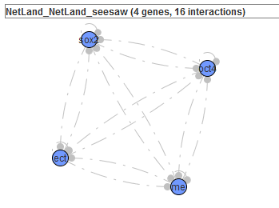
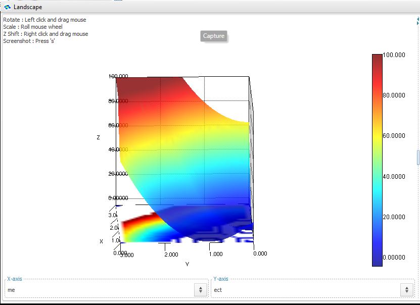
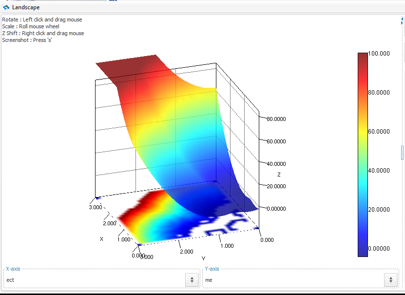
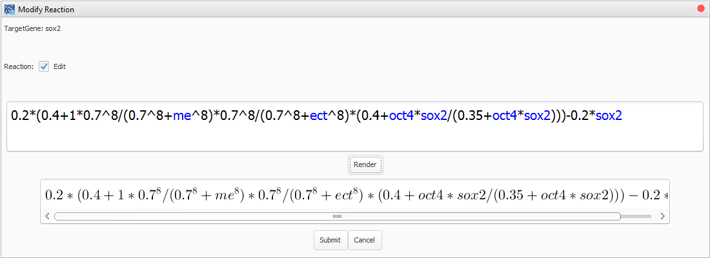
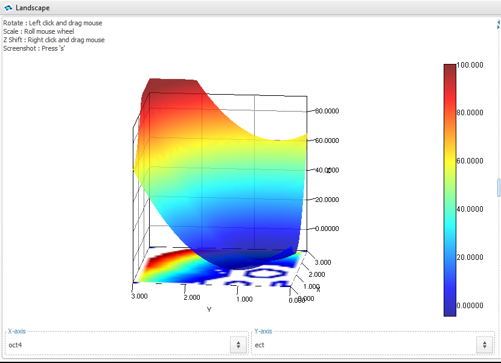
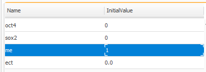
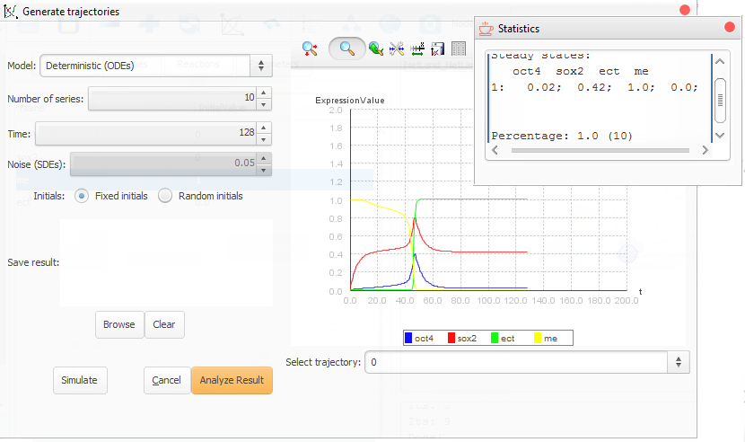
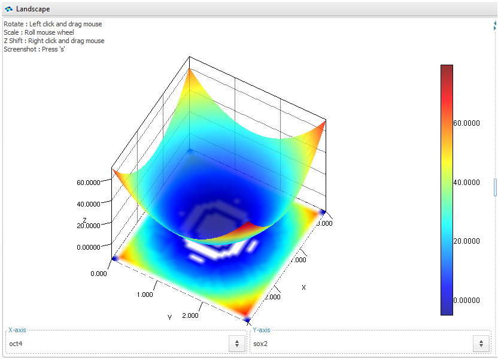
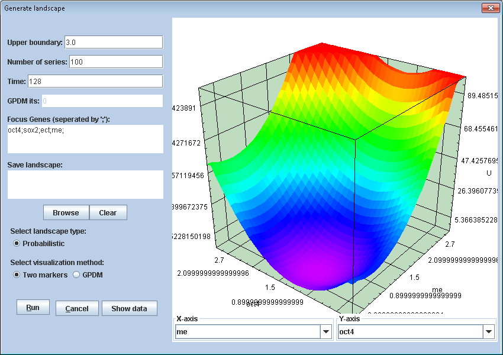

|
Installation
The Java Platform, Standard Edition Runtime Environment (JRE) is required to be installed (Java SE is available at here). We have tested NetLand under Window 7/10, Linux Fedora 18 and Mac OS 10.8.
The current NetLand package includes the following files.
An executable file, "NetLand-v1.0.jar".
Two folders namely "toy models" and "saved results" which contain toy gene network files and pre-computed results respectively.
A folder namely "NetLand_lib". It contains the required libraries to launch NetLand.
A folder namely "GPDM" which contain the executive files required for running "GPDM" program in NetLand. Note that the "NetLand.jar" file must be in the same directory as the "GPDM" folder. Make sure you have the executive permissions to the executive files. To check the permission, the command is "ls -l XXX". Use "chmod 705 filename" to gain the executive permission.
Two scripts, "run.bat" and "run.sh", for launching NetLand in different operation systems.
To run the "GPDM" program, DLL (Dynamic Link Library) of BLAS, LAPACK and GFORTRAN are required. The DLL files for Windows OS are in the GPDM/win folder. For Mac OS, please check if libblas.dylib, liblapack.dylib and libgfortran.dylib are under /usr/lib/. Otherwise users should install the libraries themselves.
The BLAS, LAPACK and GFORTRAN can be downloaded from
LAPACK, see http://www.netlib.org/lapack/
BLAS, see http://www.netlib.org/blas/
GFORTRAN, see https://gcc.gnu.org/wiki/GFortranBinaries#MacOS
Then follow the install instructions in the package. For Linux, users can use the command, e.g. yum, to install these packages.
To launch NetLand
In Windows, double click the "run.bat".
In Linux, command "./run.sh".
In OSX, command "./run.sh".
| Model | Description | Reference |
|---|
| 2gene.tsv | A two-gene network with mutual inhibitions and self-loops. | Bhattacharya, et al. 2011 |
| seesaw.tsv, NetLand_seesaw.xml | The seesaw model has four genes. It is constructed to study the stem cell state transitions. | Shu, Jian, et al. 2013 |
| BIOMD0000000209.xml | A dynamical model of lineage determination based upon a minimal circuit which contains the Oct4/Sox2/Nanog core as well its interaction with a few other key genes is discussed. | Chickarmane, et al. 2008 |
| 52gene.tsv, NetLand_52gene.xml | A stem cell developmental network with 52 gene network to study cell Fate Decisions | Wang, et al. 2008 |
To study the stem cell reprogramming process, a computational model, 'seesaw model' with 4 genes (figure below) was constructed in (Li and Wang). NetLand was applied to simulate and analyze the model.

A seesaw model used to simulate differentiation and reprogramming.
First, the regulatory relations between genes were extracted into a TSV format file. After loading it to NetLand, the differential equations would be updated according to the paper including the parameters. Once the dynamic model was settled, further analysis and simulation can be performed based on this model.
Sensitivity analysis
Parameter KM=0
When the value of Klf4 and MYC is set to be 0, the cells cannot maintain their pluripotency to start differentiation. There will be two attractors left in the landscape representing ME and ECT states.

Landscape with two attractors when KM=0.
Parameter KM=0.4
Besides two attractors, there will be an additional state representing stem cell state.

Landscape with three attractors when KM=0.4.
Reprogramming experiment with different cocktails
3.1 +Sox2
With the replenishment of Sox2, the ME lineage will all change into the ECT lineage. There are two attractors left, i.e. stem cell state and ECT state.


Landscape with two attractors when Sox2 is overexpressed.
To check whether all ME cells goes into ECT lineage, we set the initial state as ME state and made use of the analyze function in trajectories simulation. It shows all ME cells turned into ECT state (figure below).


3.2 +Yamanaka's factors (+Sox2+Oct4)
In this experiment, the somatic cells will be reprogrammed into iPSCs (similar to stem cells).

3.3 +Lineage specifiers (+ME+ECT)
In this experiment, ME and ECT work as the substitution of Oct4 and Sox2. The somatic cells will be reprogrammed into iPSCs (similar to stem cells).

|
|